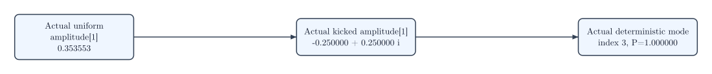
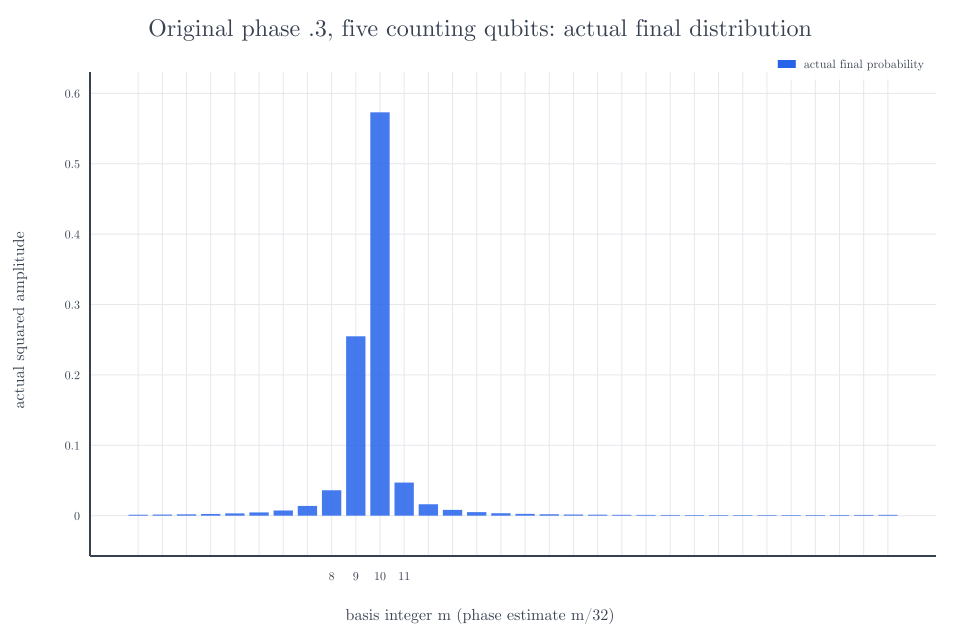
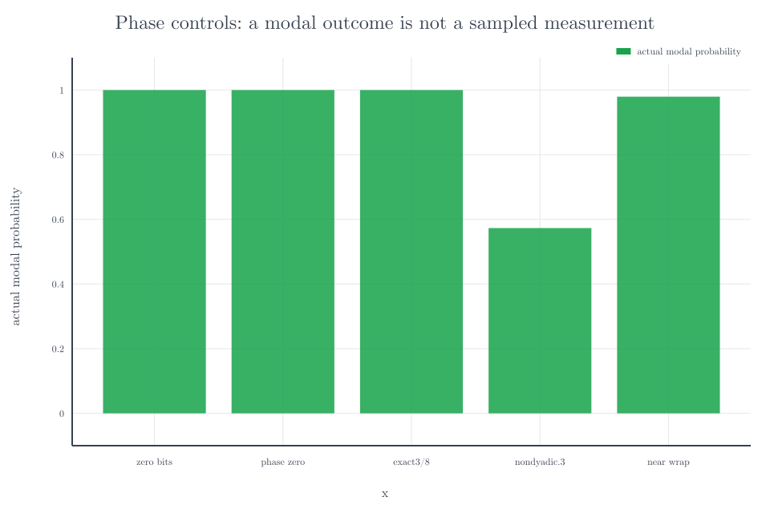
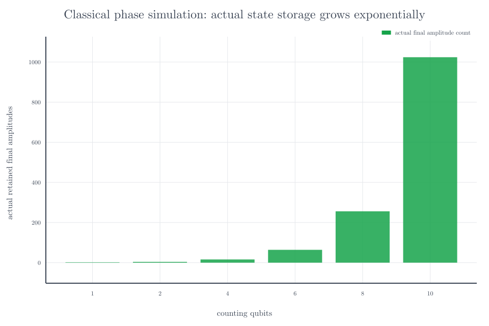

Phase estimation: actual counting-register amplitudes
Abstract
Study the actual native producer from a tiny, inspectable example through the retained original experiment and explicit boundary/work controls. Complete editable C++ programs own every rendered native figure.
Mechanism and scope
The supplied phase already represents an eigenstate’s phase kickback; this classical program does not infer an unknown unitary or prepare its eigenstate. It applies the actual native Hadamards, phase gates and inverse QFT to a state vector. The historical measured field is the first strict maximum of computed probabilities, not a sampled quantum measurement. State storage is exponential in the counting-bit count. The original dyadic3/8 and nondyadic0.3 fixtures are retained, with no external dataset.
A tiny actual producing history
The table reads actual producing records. The native diagram names actual captured values from that same run.
#include <dm/dm.hpp>
int main() {
std::filesystem::create_directories("build");
auto t = dm::algorithms::phase_estimation_trace(3, .375);
std::print("\n| basis | actual uniform real part | actual kickback real | kickback imaginary | actual " "final real | final imaginary | actual probability |\n| ---: | ---: | ---: | ---: | ---: | " "---: | ---: |\n");
for (std::size_t i = 0; i < t.distribution.size(); ++i)
std::print("| {} | {} | {} | {} | {} | {} | {} |\n", i,
t.after_hadamards[i].real(), t.after_kickback[i].real(),
t.after_kickback[i].imag(), t.after_inverse_qft[i].real(),
t.after_inverse_qft[i].imag(), t.distribution[i]);
dm::graphics::Diagram d;
d.node("n0", {0, 0},
std::format("Actual uniform amplitude[1]\n{:.6f}",
t.after_hadamards[1].real()));
d.node("n1", {9, 0},
std::format("Actual kicked amplitude[1]\n{:.6f} + {:.6f} i",
t.after_kickback[1].real(), t.after_kickback[1].imag()));
d.node("n2", {18, 0},
std::format("Actual deterministic mode\nindex {}, P={:.6f}",
t.result.measured, t.result.probability));
d.edge("n0", "n1").edge("n1", "n2");
d.save_svg("build/phase_estimation_tiny.svg");
}| basis | actual uniform real part | actual kickback real | kickback imaginary | actual final real | final imaginary | actual probability |
|---|---|---|---|---|---|---|
| 0 | 0.3535533905932737 | 0.3535533905932737 | 0 | -2.346468407104656e-17 | 4.592425496802572e-17 | 2.659628592922261e-33 |
| 1 | 0.3535533905932737 | -0.24999999999999992 | 0.24999999999999994 | -9.714451465470118e-17 | 1.673838217086935e-17 | 9.71723016519553e-33 |
| 2 | 0.3535533905932737 | -6.494670421766198e-17 | -0.3535533905932737 | -1.0143540619928353e-16 | 3.204646716021126e-17 | 1.1316117688264148e-32 |
| 3 | 0.3535533905932737 | 0.25 | 0.24999999999999986 | 0.9999999999999996 | -2.881100672715233e-16 | 0.9999999999999991 |
| 4 | 0.3535533905932737 | -0.3535533905932737 | 1.2989340843532396e-16 | 1.15313194007098e-16 | 4.592425496802572e-17 | 1.5406169906486854e-32 |
| 5 | 0.3535533905932737 | 0.24999999999999983 | -0.25000000000000006 | 9.714451465470118e-17 | 4.4493957786498275e-17 | 1.1416769007004143e-32 |
| 6 | 0.3535533905932737 | 1.9484011265298592e-16 | 0.3535533905932737 | 9.586896263232103e-18 | 5.980204277584017e-17 | 3.6681929001253916e-33 |
| 7 | 0.3535533905932737 | -0.2500000000000001 | -0.24999999999999978 | 0 | 4.3180707442052807e-17 | 1.8645734951961547e-33 |

The retained original experiment
#include <dm/dm.hpp>
int main() {
std::filesystem::create_directories("build");
auto exact = dm::algorithms::phase_estimation(3, .375);
auto t = dm::algorithms::phase_estimation_trace(5, .3);
std::print("\n| original phase | counting bits | actual modal index | estimate | actual modal probability " "|\n| ---: | ---: | ---: | ---: | ---: |\n| .375 | 3 | {} | {} | {} |\n| .3 | 5 | {} | {} | " "{} |\n",
exact.measured, exact.estimate, exact.probability,
t.result.measured, t.result.estimate, t.result.probability);
std::vector<std::string> labels;
std::print("\n| basis outcome | actual probability |\n| ---: | ---: |\n");
for (std::size_t m = 0; m < t.distribution.size(); ++m) {
labels.push_back(t.distribution[m] > .03 ? std::to_string(m) : "");
std::print("| {} | {} |\n", m, t.distribution[m]);
}
auto p =
dm::graphics::RPlot::barplot(t.distribution, labels,
"actual final probability", {37, 99, 235});
p.title("Original phase .3, five counting qubits: actual final distribution").x_label("basis integer m (phase estimate m/32)").y_label("actual squared amplitude");
p.save_svg("build/phase_estimation_original.svg");
}| original phase | counting bits | actual modal index | estimate | actual modal probability |
|---|---|---|---|---|
| .375 | 3 | 3 | 0.375 | 0.9999999999999991 |
| .3 | 5 | 10 | 0.3125 | 0.5730812243784872 |
| basis outcome | actual probability |
|---|---|
| 0 | 0.0013495761828614308 |
| 1 | 0.001580813458760278 |
| 2 | 0.00191702630928204 |
| 3 | 0.0024248095550214303 |
| 4 | 0.0032355080959700954 |
| 5 | 0.004637936717908096 |
| 6 | 0.007373381240453422 |
| 7 | 0.013855394784208178 |
| 8 | 0.03609506362936631 |
| 9 | 0.2548665062139134 |
| 10 | 0.5730812243784872 |
| 11 | 0.04705364987552043 |
| 12 | 0.016208476199276716 |
| 13 | 0.008228958929164266 |
| 14 | 0.005039533085336389 |
| 15 | 0.00345461779394336 |
| 16 | 0.0025566738171385675 |
| 17 | 0.0020019184421867613 |
| 18 | 0.0016380947275306747 |
| 19 | 0.0013894619750038314 |
| 20 | 0.0012150135498723946 |
| 21 | 0.0010911152866220851 |
| 22 | 0.0010035288411256505 |
| 23 | 0.0009434563021210222 |
| 24 | 0.0009054674448508041 |
| 25 | 0.0008863810735675266 |
| 26 | 0.0008846726545593576 |
| 27 | 0.0009002081299758635 |
| 28 | 0.0009342210806636567 |
| 29 | 0.0009895263569240685 |
| 30 | 0.001071035950697397 |
| 31 | 0.0011867479176857468 |

Explicit controls
#include <dm/dm.hpp>
int main() {
std::filesystem::create_directories("build");
struct Case {
int bits;
double phase;
const char *name;
};
std::vector<Case> cases{{0, .3, "zero bits"}, {3, 0, "phase zero"},
{3, .375, "exact3/8"}, {5, .3, "nondyadic.3"},
{3, .99, "near wrap"}};
std::vector<double> prob;
std::vector<std::string> labels;
std::print("\n| case | actual modal index | actual estimate | actual modal probability | circular phase " "error |\n| --- | ---: | ---: | ---: | ---: |\n");
for (auto c : cases) {
auto r = dm::algorithms::phase_estimation(c.bits, c.phase);
prob.push_back(r.probability);
labels.push_back(c.name);
std::print("| {} | {} | {} | {} | {} |\n", c.name, r.measured,
r.estimate, r.probability,
std::abs(std::remainder(r.estimate - c.phase, 1.)));
}
auto p =
dm::graphics::RPlot::barplot(prob, labels, "actual modal probability");
p.title("Phase controls: a modal outcome is not a sampled measurement").y_label("actual modal probability");
p.save_svg("build/phase_estimation_controls.svg");
}| case | actual modal index | actual estimate | actual modal probability | circular phase error |
|---|---|---|---|---|
| zero bits | 0 | 0 | 1 | 0.3 |
| phase zero | 0 | 0 | 0.9999999999999991 | 0 |
| exact3/8 | 3 | 0.375 | 0.9999999999999991 | 0 |
| nondyadic.3 | 10 | 0.3125 | 0.5730812243784872 | 0.012500000000000011 |
| near wrap | 0 | 0 | 0.9794435555678339 | 0.010000000000000009 |

Actual selected work
#include <dm/dm.hpp>
int main() {
std::filesystem::create_directories("build");
std::vector<double> counts;
std::vector<std::string> labels;
std::print("\n| counting bits | actual retained final amplitudes | actual preparation Hadamards | actual " "kickback phase calls |\n| ---: | ---: | ---: | ---: |\n");
for (int bits : {1, 2, 4, 6, 8, 10}) {
auto t = dm::algorithms::phase_estimation_trace(bits, .3);
counts.push_back(t.after_inverse_qft.size());
labels.push_back(std::to_string(bits));
std::print("| {} | {} | {} | {} |\n", bits, t.after_inverse_qft.size(),
t.hadamards, t.phase_gates);
}
auto p =
dm::graphics::RPlot::barplot(counts, labels,
"actual final amplitude count");
p.title("Classical phase simulation: actual state storage grows exponentially").x_label("counting qubits").y_label("actual retained final amplitudes");
p.save_svg("build/phase_estimation_work.svg");
}| counting bits | actual retained final amplitudes | actual preparation Hadamards | actual kickback phase calls |
|---|---|---|---|
| 1 | 2 | 1 | 1 |
| 2 | 4 | 2 | 2 |
| 4 | 16 | 4 | 4 |
| 6 | 64 | 6 | 6 |
| 8 | 256 | 8 | 8 |
| 10 | 1024 | 10 | 10 |

API and interpretation
Every block is a complete editable C++ program. Reusable searches, walks, geometry decisions, fixture histories and algorithm work live in the canonical library. Captured records own their values and are not reconstructed by a second algorithm in the report. Explicit policies count the documented selected calls, records or scalar entries; they are not peak-byte or wall-clock budgets. Original reference curves are labelled as references, and finite returned results are not promoted into universal convergence, recovery, scaling or speed guarantees.
Modal probabilities and each actual simulator stage agree with an independent
direct complex Fourier sum for forty register/phase fixtures. This checks a
deterministic mode, not random measurement. The shared batch passes83 native
regression tests,18 directly instrumented sanitizer tests,84 compiled and
executed public examples,391/391 scoped documentation definitions, standalone
and installed header checks, a linked installed consumer and ten representative
symbol hovers. All four complete programs execute and their computed results and
local figures survive HTML and Markdown export. Build receipts:
build/mepml-conversion/batch-284-293/.